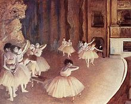

La danza ha estado evolucionando con el paso del tiempo. Desde la prehistoria, el ser humano ha tenido la necesidad de comunicarse corporalmente con movimientos que expresaban sentimientos y estados de ánimo. Algunas pinturas rupestres encontradas muestran dibujos de figuras danzantes, las cuales se asocia con ilustraciones de rituales. Estos primeros movimientos rítmicos sirvieron igualmente para ritualizar acontecimientos importantes (nacimientos, defunciones, bodas).La danza y la música
En Egipto las danzas fueron llevadas por los faraones, en Grecia, se hacían rituales de danza dedicados a los Dioses del panteón griego, estos bailes son reconocidos hoy en día como los orígenes del teatro contemporáneo occidental, en Roma, la danza formó parte de las procesiones, festivales y celebraciones en los años 150 a. C.
En principio, la danza tenía un componente ritual, celebrada en ceremonias de fecundidad, caza o guerra, o de diversa índole religiosa, donde la propia respiración y los latidos del corazón sirvieron para otorgar una primera cadencia a la danza.

Durante la edad media la iglesia rechazó la danza, ya que la consideraba incitadora a la promiscuidad sexual, con el paso de los años las danzas fueron reincorporadas y utilizadas dentro de las tribus del norte en los cultos cristianos.
En 1661, Luis XIV de Francia autorizó la primera Real Academia de la Danza. En los siguientes siglos el Ballet se daba de forma gratuita.